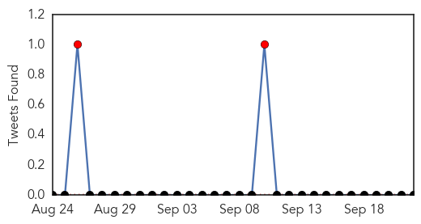
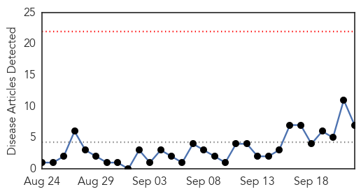
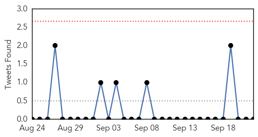
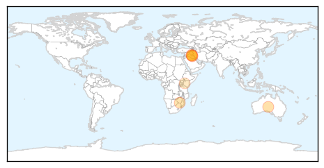
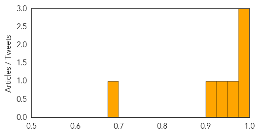

Mumps
30-Day Web Trend
0 alerts, 0 warnings
30-Day Twitter Trend
2 alerts, 0 warnings

Article Locations

Article Confidences

Top Articles:
-
No articles found for Sep 22, 2015
Top Tweets:
-
No tweets found for Sep 22, 2015
Cholera
30-Day Web Trend
0 alerts, 0 warnings

30-Day Twitter Trend
0 alerts, 0 warnings

Article Locations
Article Confidences
Top Articles:
- 0.998
- Iraq declares cholera outbreak: ‘We expect the number of cases to increase within the coming days’
- 0.992
- Iraqi authorities on alert to face cholera outbreak after 4 deaths
- 0.991
- Bombings kill 13 in Shiite areas of Baghdad
- 0.970
- Iraq facing Cholera outbreak as public services deteriorate
- 0.933
- Ridding Beitbridge of Cholera: Zimbabwe’s Hardest Hit District Fights Back - Zimbabwe
- 0.900
- Cholera Outbreak Threatens Baghdad as ISIS Ravages Iraq
- 0.681
- Kenya - Cholera Outbreak (MDRKE035): Operations Update no.1 - Kenya
Top Tweets:
- 0.526
- Cholera outbreak in Abu Ghraib, Iraq, http://t.co/n8IOawxRwC